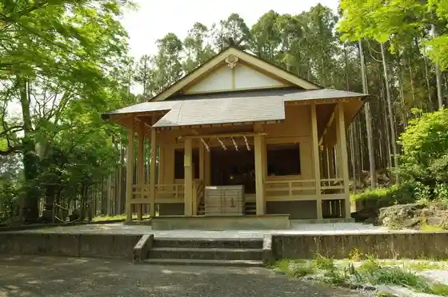
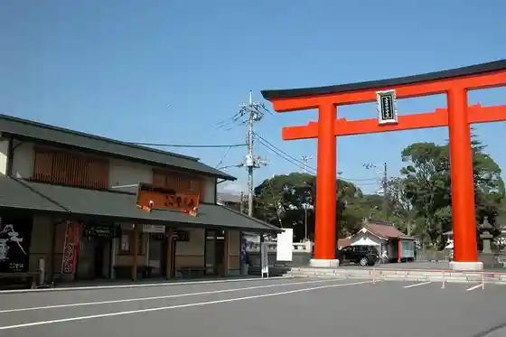
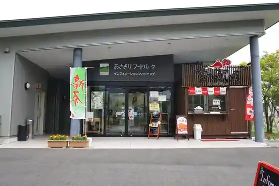

Hitoana Fuji Ko Iseki
Fujinomiya, Shizuoka · 0544-22-1187 · Official / source link

Kokozurayo
Fujinomiya, Shizuoka · 0544-24-2544 · Official / source link

Asagiri Fudo Park
Fujinomiya, Shizuoka · Official / source link

Asagiri Highlands
Fujinomiya, Shizuoka · 0544-27-5240 · Official / source link
Kariyado no Geba Sakura to Ide Kan
Fujinomiya, Shizuoka · 0544-27-5240 · Official / source link
Kiseki Museum
Fujinomiya, Shizuoka · 0544-58-3830 · Official / source link
Roadside Station Asagiri Highlands
Fujinomiya, Shizuoka · 0544-52-2230 · Official / source link
Tanuki Mizumi Fureai Shizen Juku
Fujinomiya, Shizuoka · Official / source link
Nippon Modoken Sogo Center (Modoken Village Fuji Hanesu)
Fujinomiya, Shizuoka · 0544-29-1010 · Official / source link
Fujinomiya Yakisoba Antenashoppu
Fujinomiya, Shizuoka · 054-422-5341 · Official / source link
Fuji Miruku Land
Fujinomiya, Shizuoka · 0544-54-3690 · Official / source link
Asagirikogen Mochiya
Fujinomiya, Shizuoka · 0544-52-0202 · Official / source link
Shizuokaken Fujisan Sekai Isan Center
Fujinomiya, Shizuoka · 0544-21-3776 · Official / source link
Fujisan Motomiya Asama Taisha
Fujinomiya, Shizuoka · 0544-27-2002 · Official / source link
Shiroito no Taki (Shiroito Falls)
Fujinomiya, Shizuoka · 0544-27-5240 · Official / source link
Tanuki Mizumi
Fujinomiya, Shizuoka · 090-4234-8039 · Official / source link
Murayama Asama Shrine
Fujinomiya, Shizuoka · 0544-27-5240 · Official / source link
Fujisanroku Asagiri Highlands Makai no Ranch
Fujinomiya, Shizuoka · 0544-54-0342 · Official / source link
Sangu Asama Shrine
Fujinomiya, Shizuoka · 0544-58-5190 · Official / source link